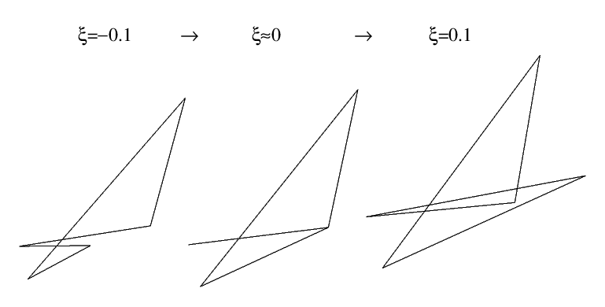
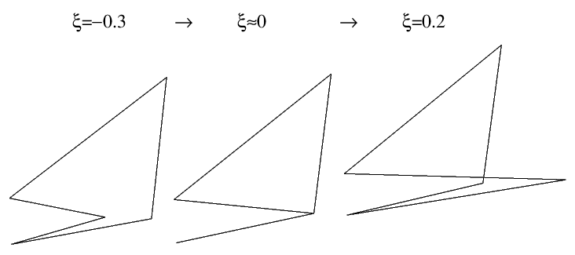

This page and the models are generated by a Python script [MTUN3], which requires the package [MTUN1]. The models are displayed with help of a light-weight OFF file viewer written in JavaScript [MTUN2].
Note: for optimal experience Javascript should be enabled.
One day I was looking for a good example of a general polyhedron with the symmetry of a tetrahedron. My friend Don Romano suggested that the tetartoid would be a good one. This inspired me to investigate these a bit more.
Select the section you are interested in from the pull-down menu below
A is a general dodecahedron consisting of pentagons.On Wikipedia the following definition is used: It uses the input values 'a', 'b' and 'c' and then one face is defined by the vertices:
with
With this page I want to investigate what happens for certain values of 'a', 'b', and 'c'. I think the first requirement is mainly to keep the tetartoids convex. It is definitely possible to have values that don't fulfill the requirement. During this investigation I am not keeping this requirement strictly. Note that for any triplet (a, b, c) the triplet (xa, xb, xc) leads to a congruent tetartoid if x ≠ 0. On this page I will refer to all these polyhedra as tetartoids, although the ones with concave faces are no tetartoids according to the definition above.
In general tetartoids are isogonal and the pentagons have three different edge lengths. This is easy to understand since two pairs of different sides of pentagons meet in one edge while the fifth side meets its own kind in opposite directions. The pentagon of a generatl tetartoid has five different angles at the vertices.
For the OFF file models of the tetartoids that are shown here holds that the value of 'a' was scaled to 1 unless a = 0. In that case my script would try scaling the value of 'b' in the same way, and then use 'c' instead if also b = 0. In some tables I might show values that are scaled to get nicer looking numbers.
Note that for the vertices № 3 and 5 there is a divide, which automatically means that the denominator shouldn't be equal to 0, in this case 'd1' and 'd2'. Requirement № 5 is related to that. It also requires that 'n ≠ 0' and that can happen e.g. when a = b = c, which is actually an interesting value to investigate, since it leads to 0 / 0.
The original motivation of the investigation was to look for an example of a dodecahedron similar to the and the , but then with tetrahedral symmetry. I suspected early on that I would end up with a regular dodecahedron, but of course I wanted to try.
As a reminder the definition of n and the requirement was as follows.
with
This section investigates what happens when the value of 'n' approaches 0.There are different ways for which this can happen and these are divided into three categories here.
This is a special case where n = 0, d1 = 0 and d2 = 0, leading to a 0 / 0. It leads to some interesting case and it needs to be investigated separately. Without loss of generality one could strive for a = b = c = 1 and approach this from different directions, which will lead to different polyhedra. In the table below the value of ξ is a positive value the approaches 0.
| a | b | c | ξ < 0 | ξ ≈ 0 | ξ > 0 |
| 1 + ξ | 1 | 1 | |||
| 1 | 1 + ξ | 1 | |||
| 1 | 1 | 1 + ξ | |||
| 1 + ξ | 1 - ξ | 1 | |||
| 1 + ξ | 1 | 1 - ξ | |||
| 1 | 1 + ξ | 1 - ξ |
Note that in the table above the faces of the tetrahedron are actually covered by three faces. It is as if this is a dodecahedron that is folded onto itselt in such a way that a tetrahedron appears. The form in the column left of it hints on how it is folded onto inself.
Also note that (a, b, c) = (1, 1 + ξ, 1 + ξ) is the same as (a, b, c) = (1 - ω, 1, 1) after scaling, and that for (a, b, c) = (1 + ξ, 1 + ξ, 1 + ξ) still holds that a = b = c still and that n = 0. This means that these do not need to be investigated further.
Using two or three different offsets isn't investigated further, even though it might lead to interesting results. E.g. for (a, b, c) = (1, 1 - 1.5ξ, 1 - ξ) or (a, b, c) = (1 + 2ξ, 1 - ξ, 1) with ξ →∞ you will get an . It might come as a surprise that such tiny differences can make such a big impact, but then imagine the function f(x) = 1 / x and the impact of tiny differences when you approach the singular point.
Without loss of generality and can set a = 1, which will give b·c = 1.
| a | b | c | ξ < 0 | ξ ≈ 0 | ξ > 0 |
| 1 | 5/4 + ξ | 4/5 | |||
| 1 | 4/5 + ξ | 5/4 |
Note that the tetartoids in the column with ξ < 0 are similar to the butterfly-winged tetrahedron and the twisted butterfly-winged tetrahedron in the previous table.
The picture below shows how the shape of one face changes depending on the value of ξ for a (a, b, c) = (1, 5/4 + ξ, 4/5).

The shared edges forming a line cannot be left out, because they are shared with other types of edges from a different face. Note that two faces connected to those edges end up in the same plane. In the given example of b = 5/4, if you increase the value of b while decreasing the value of c accordingly, then the triangle will become more elongated. For (a, b, c) = (1, 4/5 + ξ, 5/4) the face development looks as follows:

From the definition of n and can see that n = 0 when c = 0. Without loss of generality one can assume either a = 0 or a = 1, In the table below the value of 'b' is chosen to be 2. The values of 'a' and 'b' control the angle between the spikes, where 'a' specifies the distance between the tips along one axis, while 'b' defines the radius of the spikes.
| a | b | c | ξ < 0 | ξ ≈ 0 | ξ > 0 |
| 0 | 2 | 0 + ξ | |||
| 1 | 2 | 0 + ξ |
As a reminder the definition of d1 and d2 are as follows.
with the requirement that d1 ≠ 0 and d2 ≠ 0
This section investigates what happens when the value of d1 and/or the value of d2 approaches 0.There are different ways for which this can happen and these are divided into the following categories here.
If c = 0 as well then n = 0 and this is investigated in the section 'When n approaches 0'. This means we can assume that n ≠ 0 here. If this is the case then both d1 = 0 and d2 = 0. The table below shows how the tetartoid looks like for different ways of approaching the singular point.
| a | b | c | ξ < 0 | ξ ≈ 0 | ξ > 0 |
| ξ | 0 | 1 | |||
| 0 | ξ | 1 | |||
| ξ | ξ | 1 | |||
| ξ | -ξ | 1 |
If this happens, then d1 = 0. The table below shows what happens when this combination of values is approached from different directions. Since there isn't much variation, more combinations weren't atempted.
| a | b | c | ξ < 0 | ξ ≈ 0 | ξ > 0 |
| 1 + ξ | 0 | -1 | |||
| 1 | 0 + ξ | -1 | |||
| 1 | 0 | -1 + ξ |
If this happens, then d2 = 0. This situation is similar to the previous one.
With fa = a / b and f1 = (fa² − fa + 1) / (2 - fa)
If this happens, then d1 = 0
The case below is close to where n approaches 0, case 2. The offset ξ from the singular point is taken from the value 'c' below, Similar effects occur when the error ξ is use for 'a' or 'b'.
| a | b | c | ξ < 0 | ξ ≈ 0 | ξ > 0 |
| fa | 1 | f1 + ξ |
With fa = a / b and f2 = (fa² + fa + 1) / (2 + fa)
If this happens, then d2 = 0
| a | b | c | ξ < 0 | ξ ≈ 0 | ξ > 0 |
| fa | 1 | f2 + ξ |
For certain valid values of a, b and c polyhedra are obtained that are uniform, including results where faces of the tetartoid together form one face of a regular polyhedron. These are shown in the table below, in which τ = √(V5 + 1) / 2. It is understood that for all of these hold that (a, b, c) can be multiplied by a constant.
| a | b | c | Model | Remark |
| 0 | 1 | τ + 1 | ||
| 0 | τ + 1 | 1 | ||
| 1 | 1 | 3 | Each side consists of three isosceles trapezoids | |
| 1 | 1.5 | 1.5 | Each side consists of two right trapezoids. Occurs for (a, b, c) = (1, x, x), where x > 1 or x < -1 |
|
| 0 | 1 | 1 | Each side consists of two rectangles Similar to a scaled down version of the previous row, where x →∞ |
The table below shows a series of tetartoids where the faces have bilateral symmetry and the tetartoid becomes a pyritohedron, which means it has a higher symmetry. It will at least have A4×I symmetry. The value of τ in the table is the golden ratio, i.e. τ = √(V5 + 1) / 2. For all faces hold that four sides have the same length.
| a | b | c | Model | Remark |
| 0 | τ + 1 | τ² * 10000 | This is the case where (a, b, c) = (0, ξ, 1) with ξ →∞. | |
| 0 | τ + 1 | (τ + 1)² + 5 | c > (τ + 1)² | |
| 0 | τ + 1 | (τ + 1)² | ||
| 0 | τ + 1 | 2τ + 1 | τ + 1 < c < (τ + 1)² | |
| 0 | τ + 1 | τ + 1 | ||
| 0 | τ | τ + 1/2 | τ < c < τ + 1 | |
| 0 | τ + 1 | τ | Equilateral faces | |
| 0 | τ | τ - 1/5 | (τ + 1) / 2 < c < τ | |
| 0 | τ + 1 | (τ + 1) / 2 + δ | If δ = 0: Singular point where d1 = 0 | |
| 0 | τ + 1 | 10/9 | 1 < c < (τ + 1) / 2 | |
| 0 | τ + 1 | 1 | ||
| 0 | τ + 1 | 5/6 | 0 < c < 1 | |
| 0 | τ + 1 | δ | If δ = 0: Singular point where c = 0 (and a = 0) |
The table below shows some tetartoids that have equal edge lengths, but that aren't mentioned in the section 'Uniform'. Incuded are the ones that occur as singularity. For cases where edges get a length of zero it is assumed that this edge must be removed altogether. The value of τ in the table is the golden ratio, i.e. τ = √(V5 + 1) / 2.
| a | b | c | Model | Remark |
| 0 | ξ | 1 | With ξ →∞. This is a singularity where d1 = d2 = 0 due to a = b = 0. This polyhedron has a higher symmetry S4×I and with regards to this symmetry it is still isohedral. | |
| 0 | +1 | -τ | This polyhedron has a higher symmetry A4×I and with regards to this symmetry it is still isohedral. | |
| 1 + 2ξ | 1 - ξ | 1 | With ξ →∞. This is a singularity where n = 0 due to a = b = c. This polyhedron has a higher symmetry S4A4 and with regards to this symmetry it is still isohedral. | |
| 0 | τ + 1 | τ | This is a pyritohedron which has a higher symmetry than normal: A4×I and with regards to this symmetry it is still isohedral. |
The table below shows some tetartoids where angles in one face become the same, though the aren't completely equiangular. The value of τ in the table is the golden ratio, i.e. τ = √(V5 + 1) / 2.
| a | b | c | Model | Remark |
| 1 | 0 | τ-1 | The angles of the isosceles triangles are 36°, 36° and 108°, i.e. they are directly related to the regular pentagon. This isn't surprising when you look at the values of a, b, and c. The pentagons in this tetartoid can be seen completely; i.e. one of the vertices ends up on the long edge and it divides that edge into two parts according to the golden ratio. |
2026-04-17, 22:19 CET